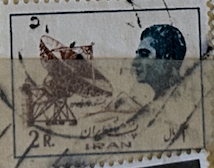
| SOURCE | TITLE| IMAGE MATCH | click to source page |
| Shutterstock | Iran Circa 1975 Stamp Printed Iran Stock Photo 2275240763 | Shutterstock | 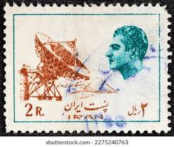 |
| Dreamstime.com | IRAN - CIRCA 1975: a Stamp Printed in Iran Shows Mohammad Reza Pahlavi the Last Shah and an Earth Telecommunication Editorial Photography - Image of monarch, antique: 271981857 | 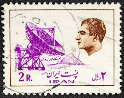 |
| 123RF | IRAN - CIRCA 1976: A Stamp Printed In Iran Shows Shah Abbas Kabir Dam And Mohammad Reza Shah Pahlavi, Circa 1976 Stock Photo, Picture and Royalty Free Image. Image 138951615. | 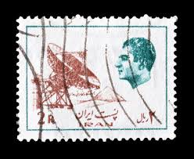 |
| CollectorBazar | Iran Used Anteena - P13565 | 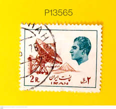 |
| Dreamstime.com | Der Iran so Um 1975 : Ein Kennzeichen Aufzudrucken in Der Iran-Shows Mohammad Reza Pahlavi Und in Einer Erdtelekommunikationsstati Redaktionelles Foto - Bild von schwarzes, pfosten: 185865126 | 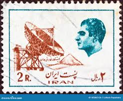 |
| Dreamstime.com | Postage Stamp Printed in Iran Shows Radio Telescope, Buildings and Industrial Plants, Mohammad Reza Shah Pahlavi Serie, Circa 1974 Editorial Stock Image - Image of plants, people: 189159484 | 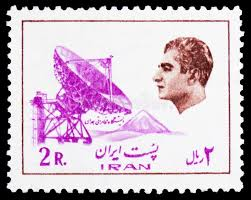 |
| Shutterstock | Iran Postage Stamps: Over 1,265 Royalty-Free Licensable Stock Photos | Shutterstock | 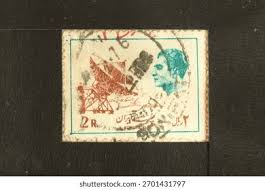 |
| Dreamstime.com | Shah Abbas and Rudaki Hall, Opera House, Tehran Editorial Stock Photo - Image of iran, house: 293982433 | 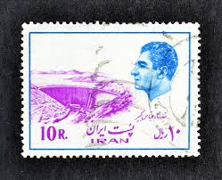 |
| Shutterstock | Singapore July 14 2018 Stamp Printed Stock Photo 1133813678 | Shutterstock | 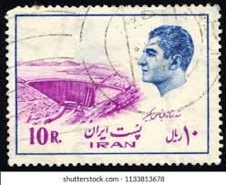 |
| Beautifuly blue and french. တ 0,90 REPUBLIQUE OHD 6公機用 NCAI ANCAIS FRANCAISE 5 5MATSFRAMCE! MATS 5MÁTS FRAMCEI! POSTES POSTES1973 1973 ENahong ENTES20 | 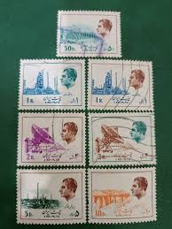 | |
| eBay | 1970's(?) ers 4 Middle East cancelled stamps | eBay | 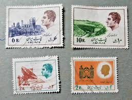 |
| Mark C. Grove | 1058:: Stamps, 1953, Iran, Airmail, Mohammad Reza Shah Pahlavi, cancelled # - Mark C. Grove | 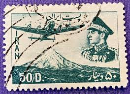 |
| ایران تمبر | 2500th Anniv of Persian Empire (2) - 1970 | IranStamp.com | 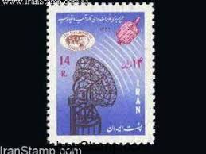 |
| کلکسیون تمبر سهراب (@sohrab.stamp.collection) • Instagram photos and videos | 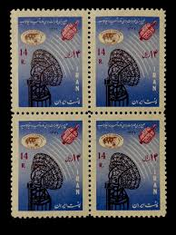 | |
| efilatelija.lt | Iran stamps (1979) for sale. Damm, overprinted issue of 1975 | 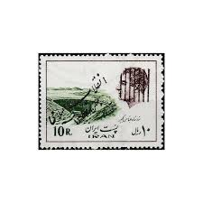 |
| Shutterstock | 3+ Thousand Stamp Iran Royalty-Free Images, Stock Photos & Pictures | Shutterstock | 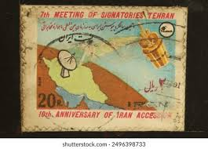 |
| Dreamstime.com | Cancelled Postage Stamp Printed by Iran, that Shows Plane Above Mosque, and Portrait of Mohammad Reza Shah Pahlavi Editorial Stock Photo - Image of mail, philatelic: 249041678 | 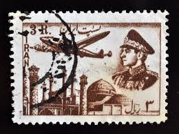 |
| Shutterstock | 4+ Thousand History Of The Islamic Republic Of Iran Royalty-Free Images, Stock Photos & Pictures | Shutterstock | 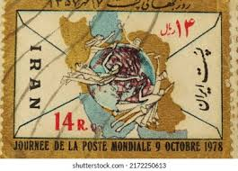 |
| Alamy | MOSCOW, RUSSIA - APRIL 18, 2020: Postage stamp printed in Iran shows Aryamehr stadium, Tehran, Buildings and industrial plants, Mohammad Reza Shah Pah Stock Photo - Alamy | 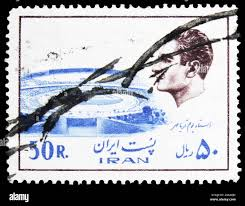 |
| Wikipedia | K. N. Toosi University of Technology - Wikipedia | 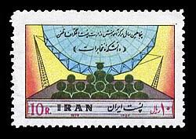 |
| Alamy | Iranian Stamps on an air mail enveloppe, Iran, 1992 Stock Photo - Alamy | 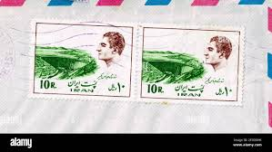 |
| Dreamstime.com | IRAN - CIRCA 1970: a Stamp Printed in Iran Shows Symbols of Reform Laws and Shah Mohammad Reza Pahlavi, Circa 1970. Editorial Photo - Image of antique, crown: 193531816 | 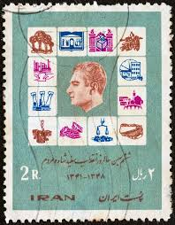 |
| Dreamstime.com | Postage Stamp Printed in Iran Shows Refinery, Tehran, Buildings and Industrial Plants, Mohammad Reza Shah Pahlavi Serie, Circa Editorial Stock Photo - Image of headgear, iran: 179741358 | 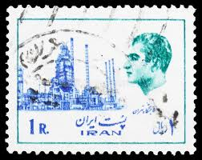 |
| Dreamstime.com | 648 Stamp Iran Stock Photos - Free & Royalty-Free Stock Photos from Dreamstime | 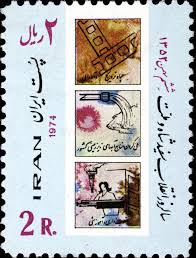 |
| It's Nice That | Stamps of a Revolution: Ali Mobasser's Iranian stamp collection and incredible family story | 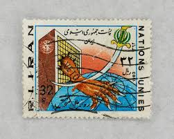 |
| Dreamstime.com | Shah Abbas Kabir Dam Buildings Industrial Plants Mohammad Stock Photos - Free & Royalty-Free Stock Photos from Dreamstime | 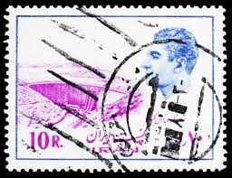 |
| eBay | دهمین سال پیوستن ایران به سازمان جهانی ماهواره مخابراتی سال 1357 | eBay | 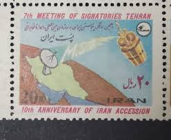 |
| Alamy | Iran 1975 hi-res stock photography and images - Alamy | 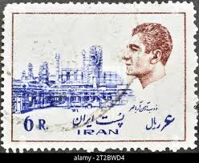 |
| Shutterstock | 1,688 Iran Afghanistan War Royalty-Free Images, Stock Photos & Pictures | Shutterstock | 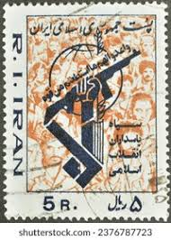 |
| Champion Stamp | IRAN COVERS | 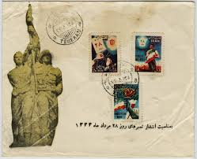 |
| Shutterstock | Iran Circa 1980 Cancelled Postage Stamp Stock Photo 2352556139 | Shutterstock | 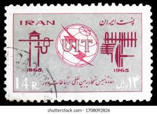 |
| Iran Philatelic Study Circle | First Day Covers of Iran — Iran Philatelic Study Circle | 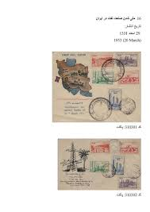 |
| eBay | Facaulty of Communications – 1978 پنجاهمین سال دانشکده مخابرات 1357 | eBay | 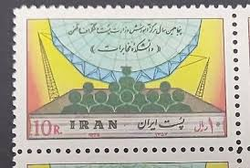 |
| owlsandbooks.co.uk | BOOK STAMPS IRAN | 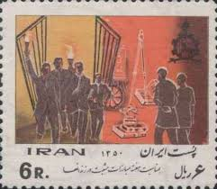 |
| HipStamp | Browse Products / HipStamp | 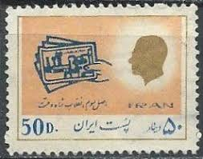 |
| Shutterstock | 19,199 Stavropol' Royalty-Free Images, Stock Photos & Pictures | Shutterstock | 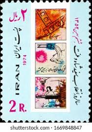 |
| Todocolección | o) 1910 circa, iran, coat of arms, poste aerien - Buy Antique stamps of Iran on todocoleccion | 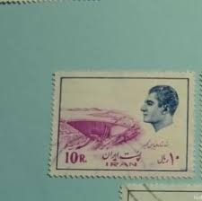 |
| Shutterstock | Moscow Russia April 18 2020 Postage Stock Photo 1708632361 | Shutterstock | 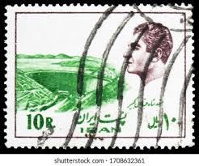 |
| 123RF | POLAND -CIRCA 1964: Stamp Honoring 20th Anniversary Of People's Republic Poland Shows Industrial Simbols, Circa 1964 Stock Photo, Picture and Royalty Free Image. Image 13257821. | 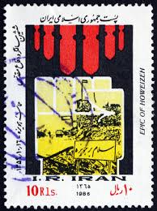 |
| HipStamp | IRAN SCOTT 2010 | Middle East - Iran, General Issue Stamp / HipStamp | 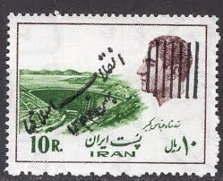 |
| STEVE LEVINE STAMPS-PLUS | IRAN Scott #2008-19, 1979 Islamic Revolution Overprints (Set of 9) - SteveLevineStamps-Plus | 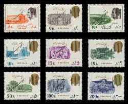 |
| kingskollectables.ca | IRAN BLOCK OF 4 MNH 8R AGRICULTURE STAMPS SCOTT # 1932 F-VF – King's Kollectables | 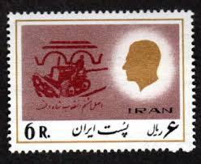 |
| lastdodo.com | Emblem of the Guardians of the Revolution 5 (1981) - Iran - LastDodo | 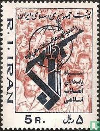 |
| The Itty Bitty Stamp Company | Iran Scott # 1469/1471 Mint Never Hinged – The Itty Bitty Stamp Company | 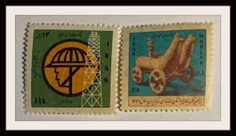 |
| Dreamstime.com | 118 Earthquake Stamp Stock Photos - Free & Royalty-Free Stock Photos from Dreamstime | 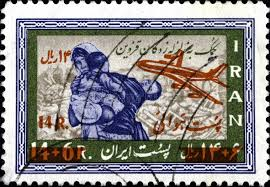 |
| eBay | Aviation History Aircraft over ancient Mosque Shach stamp 1949 | eBay | 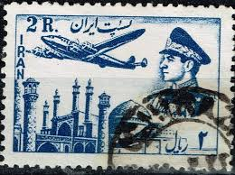 |
| Revolution 10 (1979) - Iran - LastDodo | 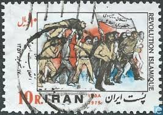 | |
| Shutterstock | 38 Aryamehr Royalty-Free Images, Stock Photos & Pictures | Shutterstock | 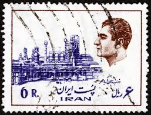 |
| Todocolección | iran, 1976, 50 aniversario de la dinastia pahla - Buy Antique stamps of Iran on todocoleccion | 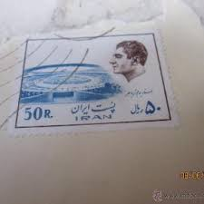 |
| Shutterstock | Letter Revolution: Over 4,538 Royalty-Free Licensable Stock Photos | Shutterstock | |
| postbeeld.com | Stamps with the theme U.P.U. - PostBeeld - Online Stamp Shop - Collecting | |
| efilatelija.lt | Iran stamps (1963) for sale. Education | |
| Colnect | Stamp: Air mail letter with Iranian stamp from 1976, UPU emblem (Iran(World Post Day) Mi:IR 1844,Sn:IR 1915,Yt:IR 1674,Sg:IR 2000,Far:IR 1852 📮 | |
| lastdodo.com | Stamps from Yemen [1962-1990] - Arab Republic (Y.A.R.) Stamp catalogue - LastDodo | |
| Arya Stamps | Scott 1272 (Error) | |
| Dreamstime.com | Iran or Persia Map - Islamic Republic of Iran, is a Country in Western Asia Stock Vector - Illustration of vector, topography: 135609688 | |
| eBay | روز جهانی ارتباطات 1357 World Telecommunications Day – 1978 | eBay | |
| Alamy | Iran iranian Cut Out Stock Images & Pictures - Alamy | |
| eBay | LOT STAMPS MIDDLE EAST 1985 MNH** (F125987) | eBay | |
| HipStamp | IRAN SCOTT 1598 | Middle East - Iran, Stamp / HipStamp |